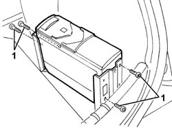
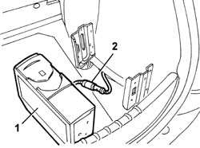

5570T85 cd/audio player loader - r r
- Path
- Procedures > 55 ELECTRICAL EQUIPMENT > 5570 ACCESSORIES > 5570T car radio and car telephone > 5570T85 cd/audio player loader - r r
- Kind
- repair procedure (removal / refitting; the operation number is the code)
- Applies to
- all engines; all production periods
- Interactive page
- https://sloeber94.github.io/elrnDB-a147/en/#/3025598
Applies to: all engines; all production periods
 Removing
Removing
 Refitting
RefittingOpen the tailgate.
1. Unscrew the audio CD player bolts.

Applies to: all engines; all production periods
1. Move the audio CD player slightly.
2. Disconnect the electrical connection and recover the audio CD player.

Applies to: all engines; all production periods
Refitting
RemovingCheck the audio CD player is not damaged.
Connect the electrical connection
Fit the audio CD player, then secure with bolts.
Check the operation of the audio CD player.
Topics that link to this page (6)
- 3340A34 rpm sensor (one) of one l/h or r/h rear wheel - r+r
- 3340A35 left rear wheel rpm sensor - r r
- 3340A37 right rear wheel rpm sensor - r r
- 5570T89 cd player/loader/audio mount - r r
- 7040B06 side trim (one) lh or rh, load compartment/load platform - r r
- 7040B10 load platform (luggage platform) trim - r+r